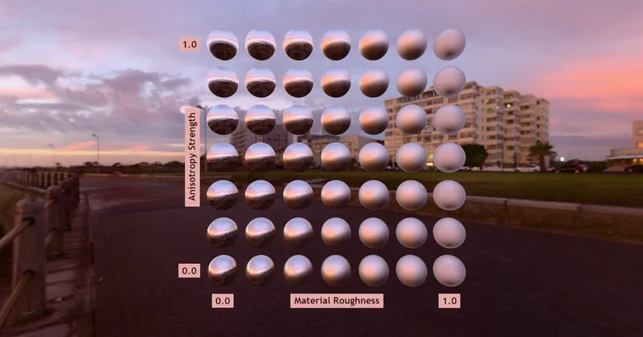

GLTF > GLTF Extensions > KHR_materials_anisotropy
Anisotropy Strength Test - RedGPU WebGPU Example
Tests highlight changes based on anisotropy strength.
비등방성 강도(Strength)에 따른 하이라이트 변화를 테스트합니다.

GLTF > GLTF Extensions > KHR_materials_anisotropy
Tests highlight changes based on anisotropy strength.
비등방성 강도(Strength)에 따른 하이라이트 변화를 테스트합니다.
